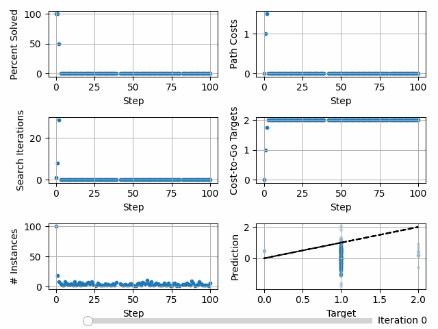

Creating a Custom Heuristic Function Optimizer and Loss¶
We will create a heuristic function that is optimized via stochastic gradient descent with momentum and that has an asymmetric loss that penalizes overestimation more than underestimation.
In the directory in which you run deepxube, create a heuristics/resnet_fc_tut.py file.
DeepXube automatically looks in the heuristics/ folder to see what is registered. This file will be explained part-by-part.
from typing import List, Type, Tuple, Optional
import torch
from torch import nn, Tensor
import torch.optim as optim
from torch.optim import Optimizer
from deepxube.base.factory import DelimParser
from deepxube.base.nnet_input import FlatIn
from deepxube.base.heuristic import HeurNNet
from deepxube.nnet.pytorch_models import FullyConnectedModel, ResnetModel, OneHot
from deepxube.factories.heuristic_factory import heuristic_factory
# start registration
@heuristic_factory.register_class("resnet_fc_asym")
class ResnetFCHeur(HeurNNet[FlatIn]):
@staticmethod
def nnet_input_type() -> Type[FlatIn]:
return FlatIn
def __init__(self, nnet_input: FlatIn, out_dim: int, q_fix: bool, res_dim: int = 1000, num_blocks: int = 4, batch_norm: bool = False,
lr: float = 0.001, momentum: float = 0.5, over_w: float = 1.0):
super().__init__(nnet_input, out_dim, q_fix)
self.lr = lr
self.momentum: float = momentum
self.lr_curr: float = self.lr
self.over_w: float = over_w
# one hots
self.one_hots: nn.ModuleList = nn.ModuleList()
input_dim_tot: int = 0
input_dims, one_hot_depths = self.nnet_input.get_input_info()
for input_dim, one_hot_depth in zip(input_dims, one_hot_depths, strict=True):
assert one_hot_depth >= 1
self.one_hots.append(OneHot(one_hot_depth, True))
input_dim_tot += input_dim * one_hot_depth
# res net
self.res_dim: int = res_dim
def res_block_init() -> nn.Module:
return FullyConnectedModel(res_dim, [res_dim] * 2, ["RELU", "LINEAR"], batch_norms=[batch_norm] * 2)
self.heur = nn.Sequential(
nn.Linear(input_dim_tot, res_dim),
ResnetModel(res_block_init, num_blocks, "RELU"),
nn.Linear(res_dim, self.out_dim)
)
# end init
# start forward
def _forward(self, inputs: List[Tensor]) -> Tensor:
inputs_oh: List[Tensor] = [one_hot(input_i) for input_i, one_hot in zip(inputs, self.one_hots)]
x: Tensor = self.heur(torch.cat(inputs_oh, dim=1))
return x
# end forward
# start optim
def get_optimizer(self) -> Optimizer:
return optim.SGD(self.parameters(), lr=self.lr, momentum=self.momentum)
def update_optimizer(self, optimizer: Optimizer, train_itr: int) -> None:
self.lr_curr: float = self.lr / ((train_itr // 100) + 1)
for param_group in optimizer.param_groups:
param_group['lr'] = self.lr_curr
# end optim
# start loss
def get_loss_and_info(self, fwd_tr_tensors: List[Tensor], get_info: bool) -> Tuple[Tensor, Optional[str]]:
ctgs_nnet: Tensor = fwd_tr_tensors[0]
ctgs_targ: Tensor = fwd_tr_tensors[1]
err = ctgs_nnet - ctgs_targ
sq_err = err ** 2
sq_err_w = (self.over_w * sq_err * (err > 0.0)) + (sq_err * (err <= 0.0))
loss = sq_err_w.mean()
info: Optional[str] = None
if get_info:
info = f"targ_ctg: {ctgs_targ.mean().item():.2f}, nnet_ctg: {ctgs_nnet.mean().item():.2f}, lr: {self.lr_curr:.2E}"
return loss, info
# end loss
# start repr
def __repr__(self) -> str:
repr_str: str = super().__repr__()
repr_str = f"{repr_str}\nOver est weight: {self.over_w}"
return repr_str
# end repr
# start parser
@heuristic_factory.register_parser("resnet_fc_asym")
class ResnetFCParser(DelimParser):
def __init__(self) -> None:
super().__init__()
self.add_argument("H", "res_dim", int, "dimensionality of hidden layers in residual blocks")
self.add_argument("B", "num_blocks", int, "number of residual blocks")
self.add_argument("bn", "batch_norm", None, "Batch normalization")
self.add_argument("O", "over_w", float, "weight for overestimation")
@property
def delim(self) -> str:
return "_"
# end parser
Tip
For heuristics that are specific to a domain, it is best to define and register them in the domain file, itself. However, for heuristics that
can be re-used across domains, it is best to define and register them in a separate file in the heuristics/ folder.
Tip
Since the heuristic is registered, we should be able to see “resnet_fc_asym” with
deepxube heuristic_info after it is put in your heuristics/ folder.
More specific information can be obtained about the heuristic with
deepxube heuristic_info --name resnet_fc_asym
Registration, Initialization, and Forward¶
The heuristic function takes one-dimensional data, applies the specified one-hot transformation to it, and feeds this data to a fully-connected residual neural network.
@heuristic_factory.register_class("resnet_fc_asym")
class ResnetFCHeur(HeurNNet[FlatIn]):
@staticmethod
def nnet_input_type() -> Type[FlatIn]:
return FlatIn
def __init__(self, nnet_input: FlatIn, out_dim: int, q_fix: bool, res_dim: int = 1000, num_blocks: int = 4, batch_norm: bool = False,
lr: float = 0.001, momentum: float = 0.5, over_w: float = 1.0):
super().__init__(nnet_input, out_dim, q_fix)
self.lr = lr
self.momentum: float = momentum
self.lr_curr: float = self.lr
self.over_w: float = over_w
# one hots
self.one_hots: nn.ModuleList = nn.ModuleList()
input_dim_tot: int = 0
input_dims, one_hot_depths = self.nnet_input.get_input_info()
for input_dim, one_hot_depth in zip(input_dims, one_hot_depths, strict=True):
assert one_hot_depth >= 1
self.one_hots.append(OneHot(one_hot_depth, True))
input_dim_tot += input_dim * one_hot_depth
# res net
self.res_dim: int = res_dim
def res_block_init() -> nn.Module:
return FullyConnectedModel(res_dim, [res_dim] * 2, ["RELU", "LINEAR"], batch_norms=[batch_norm] * 2)
self.heur = nn.Sequential(
nn.Linear(input_dim_tot, res_dim),
ResnetModel(res_block_init, num_blocks, "RELU"),
nn.Linear(res_dim, self.out_dim)
)
# end init
# start forward
def _forward(self, inputs: List[Tensor]) -> Tensor:
inputs_oh: List[Tensor] = [one_hot(input_i) for input_i, one_hot in zip(inputs, self.one_hots)]
x: Tensor = self.heur(torch.cat(inputs_oh, dim=1))
return x
Important
DeepXube expects the first three arguments, nnet_input: FlatIn, out_dim: int, q_fix: bool to have these exact names so the
neural network can be properly initialized.
Custom Optimizer¶
Instead of using the default Adam optimizer, we implement stochastic gradient descent with momentum. Instead of using the default
exponential learning rate decay, we implement a step decay. This is done by overriding deepxube.base.heuristic.DeepXubeNNet.get_optimizer
and deepxube.base.heuristic.DeepXubeNNet.update_optimizer.
def get_optimizer(self) -> Optimizer:
return optim.SGD(self.parameters(), lr=self.lr, momentum=self.momentum)
def update_optimizer(self, optimizer: Optimizer, train_itr: int) -> None:
self.lr_curr: float = self.lr / ((train_itr // 100) + 1)
for param_group in optimizer.param_groups:
param_group['lr'] = self.lr_curr
Custom Loss¶
By overriding deepxube.base.heuristic.HeurNNet.get_loss_and_info, an asymmetric loss can be implemented. Custom information that
periodically gets printed to the screen can also be
def get_loss_and_info(self, fwd_tr_tensors: List[Tensor], get_info: bool) -> Tuple[Tensor, Optional[str]]:
ctgs_nnet: Tensor = fwd_tr_tensors[0]
ctgs_targ: Tensor = fwd_tr_tensors[1]
err = ctgs_nnet - ctgs_targ
sq_err = err ** 2
sq_err_w = (self.over_w * sq_err * (err > 0.0)) + (sq_err * (err <= 0.0))
loss = sq_err_w.mean()
info: Optional[str] = None
if get_info:
info = f"targ_ctg: {ctgs_targ.mean().item():.2f}, nnet_ctg: {ctgs_nnet.mean().item():.2f}, lr: {self.lr_curr:.2E}"
return loss, info
Representation¶
Since the overestimation amount is a parameter given to the class constructor, we can modify the __repr__ function to also print this
information.
def __repr__(self) -> str:
repr_str: str = super().__repr__()
repr_str = f"{repr_str}\nOver est weight: {self.over_w}"
return repr_str
Tip
The neural network representation is printed before training to make it easier to determine what neural network architecture was used across different runs.
Parser¶
The parser parses the overestimation penalty along with the dimensionality of the residual network, number of blocks, and whether or not to perform batch normalization.
@heuristic_factory.register_parser("resnet_fc_asym")
class ResnetFCParser(DelimParser):
def __init__(self) -> None:
super().__init__()
self.add_argument("H", "res_dim", int, "dimensionality of hidden layers in residual blocks")
self.add_argument("B", "num_blocks", int, "number of residual blocks")
self.add_argument("bn", "batch_norm", None, "Batch normalization")
self.add_argument("O", "over_w", float, "weight for overestimation")
@property
def delim(self) -> str:
return "_"
Training¶
deepxube train --domain cube3 --heur resnet_fc_asym.200H_2B_bn_20o --heur_type V --pathfind graph_v --step_max 100 --up_itrs 100 --search_itrs 50 --backup -1 --procs 2 --batch_size 200 --max_itrs 5000 --dir tutorial/heur_asym_loss/models/ --display 50
--display 50: to display the neural network training information implemented in get_loss_and_info every 50 iterations.
Using deepxube train_summary --dir tutorial/heur_asym_loss/models/ we can see that the neural network output is below the target
the majority of the time.
